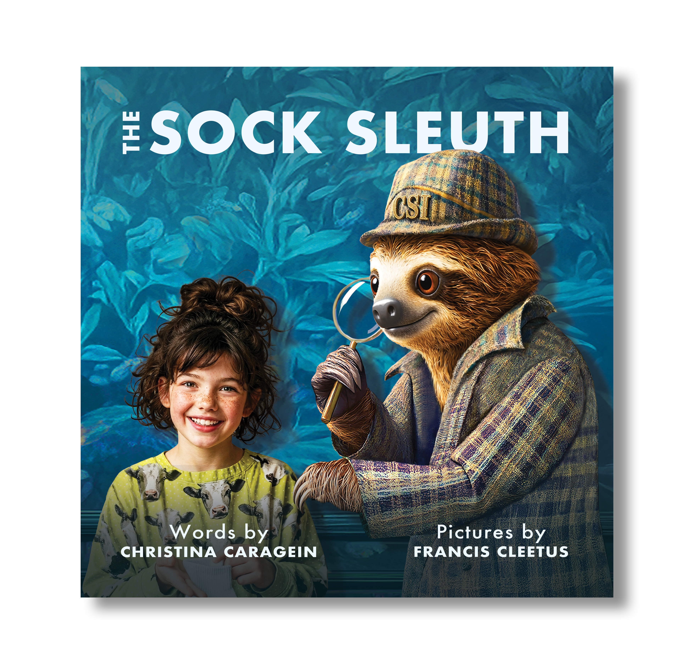

Reviews

-
“Great for families who always have a basket of unmatched socks!! Enjoyed the book. Loved the wonderful illustrations and characters. Perfect for my son and his family who always have a basket of unmatched socks.”
-
“This charming rhyming picture book turns the case of the missing sock into a delightful bedtime caper. Luci's bedtime routine spirals into a full investigation when she calls in Cole Sloth, Investigator — a wonderfully deadpan detective whose "two speeds are slow and extra slow." A sweet, funny pick for any budding little detective's bedtime shelf.”
-
“A classic in the making - and sure to become a series! Cute premise everyone can relate to about losing socks. Your children will appreciate the humor and maybe begin putting their socks in pairs to the laundry! Children will be fascinated with the beautiful illustrations. Nice light-hearted bedtime story that will leave your child smiling! :)”
-
“The title intrigued me and didn't disappoint. This adorable rhyming story turns a simple missing sock into a fun, giggle‑filled mystery. Kids will love following the sock detectives as they search high and low. The illustrations are full of personality, making each page fun. A perfect bedtime read — little readers will want to solve the sock mystery again.”
-
“The Sock Sleuth is such a charming children's book filled with mystery and childhood humor! When socks go missing, there is only one perfect sleuth to request to solve this timeless mystery! With its whimsical illustrations, endearing characters, and lovely verse, The Sock Sleuth will surely entertain parents and children alike! The unconventional characters hidden within this delightful book will also bring many smiles to readers' faces!”
-
“This is a must-get children’s book!!! The illustrations and the clever names were perfect! I cannot recommend this book enough! I will have to order another for my great-niece and nephew since I am keeping this copy for myself! :)”
-
“Perfect for kids (and husbands!) The illustrations are delightful, and the writing is witty and easy to read aloud. It’s perfect for bedtime, especially if you want a story that’s gentle but still makes everyone giggle. Actually, if you’re after a book that’s entertaining (and encourages your family to keep track of their socks), this is a cracking choice!”
-
“Fantastic kid’s story! The Sock Sleuth is a fabulous children’s book!! The concept is adorable - who hasn’t lost socks?? And the illustrations are incredible!! Your kids will love it!!!”